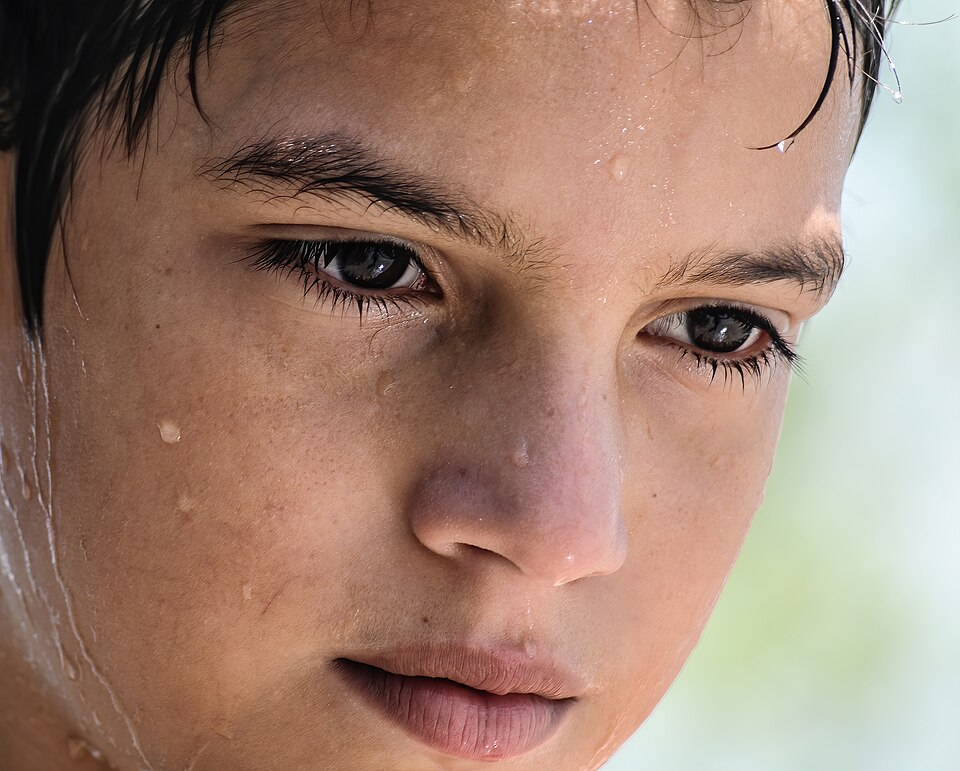

⛏Face the Wither and prepare to fight.
ウィザーに面してから戦う準備をしなさい。
/ˈfeɪs ðə ˈwɪðər ənd prɪˈpɛr tə ˈfaɪt/
フェイス ザ ウィザー アン プリペア タ ファイト

⛏Face the Wither and prepare to fight.
ウィザーに面してから戦う準備をしなさい。
⛏The ore face is exposed after mining.
採掘後、鉱石の面が露出している。
⛏Don't face this creeper at night alone.
夜にこのクリーパーを1人で相手にするな。
All the mobs have different faces in this texture pack.
このテクスチャパックではすべてのモブが異なる顔を持っています。
The pixel art faces on those armor stands look amazing.
あのアーマースタンドのピクセルアート顔は素晴らしく見えます。
The enderman faces the player when it's about to attack.
エンドマンは攻撃しようとするときプレイヤーに面します。
My house faces north so I can see the forest biome clearly.
私の家は北向きなので、森バイオームをはっきり見ることができます。
I faced the Wither boss and barely survived the battle.
ウィザーボスと戦い、かろうじて戦闘から生き残りました。
We faced many zombie hordes in the desert when exploring for villages.
村を探すために砂漠を探索していたとき、多くのゾンビ軍団に直面しました。
Having faced many dangers, the player finally reached the nether portal.
多くの危険に直面した後、プレイヤーは最終的にネザーポータルに到達しました。
We had faced the challenge of finding diamonds before, but this time it took longer.
以前もダイヤモンドを見つけるという課題に直面していましたが、今回はさらに時間がかかりました。
Facing the dark cave ahead, I decided to bring more torches and weapons.
目の前の暗い洞窟に直面して、より多くの懐中電灯と武器を持ってくることにしました。
When facing hostile mobs, always try to keep the high ground to gain an advantage.
敵対的なモブに直面するとき、常に高台を保つ利点を得るようにしてください。
⛏The two players face off in the arena.
2人のプレイヤーがアリーナで対立している。
⛏In the face of danger, we must survive.
危険に直面して、生き残らなければならない。